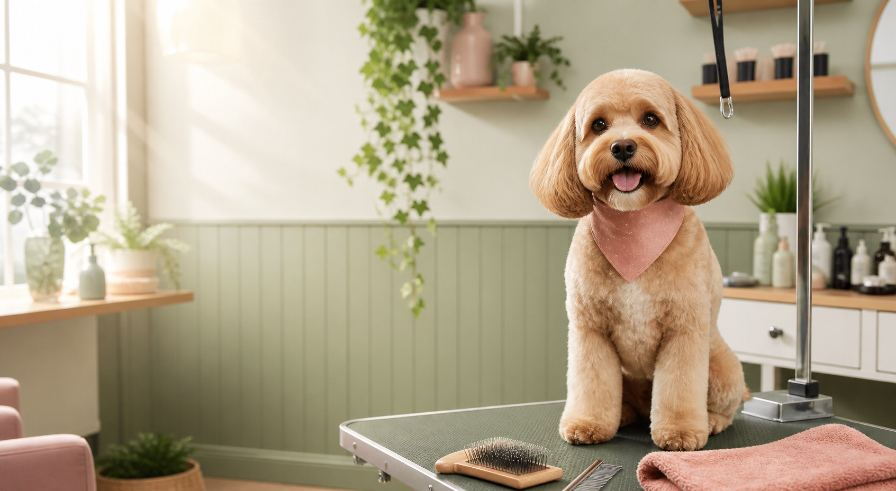

Bath & Brush
Bath, blow dry, brush-out, nails, ears, and finishing details for a clean reset.

Independent dog grooming
One-on-one dog grooming for families around Stone County and nearby Southwest Missouri communities.
Services
Grooming needs can vary a lot by coat, size, age, and temperament. Mahlorie can talk through what your dog needs and set expectations before the appointment.
Bath, blow dry, brush-out, nails, ears, and finishing details for a clean reset.
Bath and brush service plus haircut or tidy trim based on coat, comfort, and owner preference.
A lighter first visit focused on gentle handling and building a positive grooming routine.
De-shedding, nail grinding, face and feet trims, and coat-specific care as available.
Approach
Coat condition, age, temperament, and grooming history shape the plan.
Timing, coat concerns, and practical styling choices are communicated clearly.
Gentle handling and practical finishing help dogs leave comfortable and clean.
Booking
Share your dog's breed or mix, size, coat condition, and what kind of groom you have in mind. Mahlorie serves Stone County, Missouri and the surrounding Southwest Missouri area.